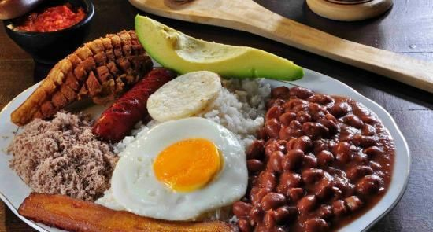
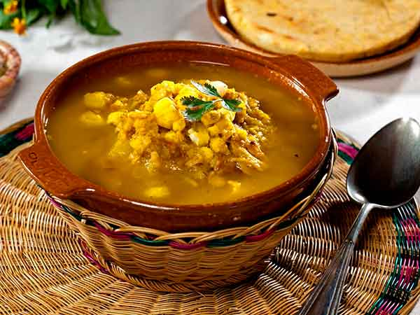

Bandeja Paisa

Preparación:
Tradicionalmente la Bandeja Paisa incluye frijoles, arroz blanco, chicharrón,carne en polvo, chorizo, huevo frito, plátano maduro, aguacate y arepa, pero se puede sustituir la carne en polvo por carne de res o de cerdo a la parrilla. Normalmente suelo hacer los frijoles y la carne en polvo el día anterior para que la receta sea más fácil.Escribe un comentario:
Pedro: La mejor alternativa para un almuerzo de fin de semana.
Esperanza: Excelente receta.....
Mute Santandereano

Se mezclan los caldos de las costillas y la pata y se ponen a cocinar el maíz y los garbanzos por 20 minutos, luego se agregan los fríjoles, las papas, sal, pimienta y los cominos y se deja cocinar por 20 minutos más. Por último, se añaden las conchitas, la berenjena y la ahuyama, se tapa y se deja conservar a fuego lento por 25 minutos. Se regresan las carnes al caldo, se agregan las guascas y se deja el mute cocinando a fuego lento por 10 minutos más. Se sirve y a cada porción se le pone una cucharada grande del guiso caliente y se le rocía perejil.
Preparación:
Se cocinan las costillas, la carne de cerdo y las cebollas juntas en 12 tazas de agua por 1 hora. Se sacan, se descarta la cebolla. La carne de cerdo se pica menudita y se corta con las costillas aparte. Mientras tanto se cocina en olla a presión la tripa con la pizca de bicarbonato y agua que la cubra por 45 minutos. La mano también se cocina en la olla a presión con las 4 tazas de agua restantes por ½ hora. Se saca y se pica menudita.Se mezclan los caldos de las costillas y la pata y se ponen a cocinar el maíz y los garbanzos por 20 minutos, luego se agregan los fríjoles, las papas, sal, pimienta y los cominos y se deja cocinar por 20 minutos más. Por último, se añaden las conchitas, la berenjena y la ahuyama, se tapa y se deja conservar a fuego lento por 25 minutos. Se regresan las carnes al caldo, se agregan las guascas y se deja el mute cocinando a fuego lento por 10 minutos más. Se sirve y a cada porción se le pone una cucharada grande del guiso caliente y se le rocía perejil.
Escribe un comentario:
Carolina: Super recomendada esta receta.